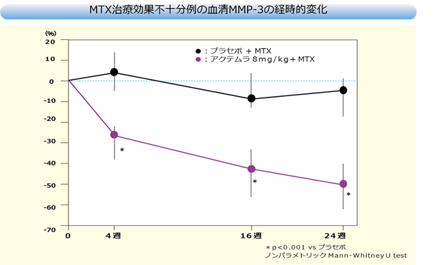

アクテムラ投与によりRA患者の血清MMP-3が有意に低下した（OPTION Study）
目的：メトトレキサート（MTX）併用下で、アクテムラの有効性および安全性を比較検討する（二重盲検試験）
方法：罹病期間6カ月以上で、MTXによる治療を12週間以上継続しており、MTX治療によっても効果不十分なRA患者623名をプラセボ＋MTX群、アクテムラ4mg/kg＋MTX群 、アクテムラ8mg/kg＋MTX群の3群に割り付け、アクテムラを4週間隔で24週間点滴投与（アクテムラ4㎎/㎏は表示なし）

※MMP-3は軟骨が破壊されると細胞から放出される物質で軟骨破壊のマーカーとなる
OPTION試験にてアクテムラ投与後のMMP-3の変化が評価され、 アクテムラ投与によりMMP-3が有意に減少した
Garnero P, et al.: ARTHRITIS & RHEUMATISM, 2010; 62（1）: 33-43より改変